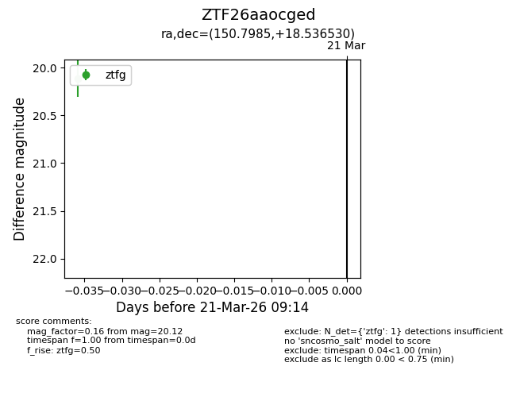
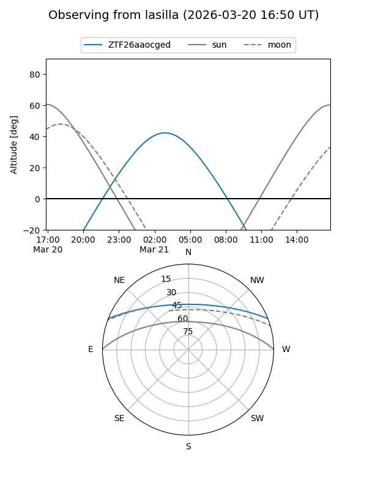
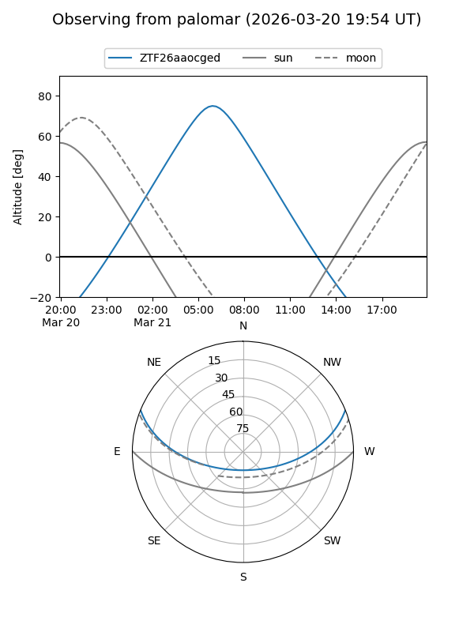

ZTF26aaocged
Target ZTF26aaocged at 2026-03-21 09:16
Aliases and brokers:
FINK: link
Lasair: link
ALeRCE: link
alt names
ZTF26aaocged (ztf,fink_ztf)
Coordinates:
equatorial (ra, dec) = 150.7985,+18.53653
equatorial (HMS+DMS) = 10:03:11.64,+18:32:11.51
galactic (l, b) = (216.3592,+50.48320)
Flags:
Photometry:
last ztfg=20.12
1 ztfg detections
Lightcurve

Visibility


Additional plots